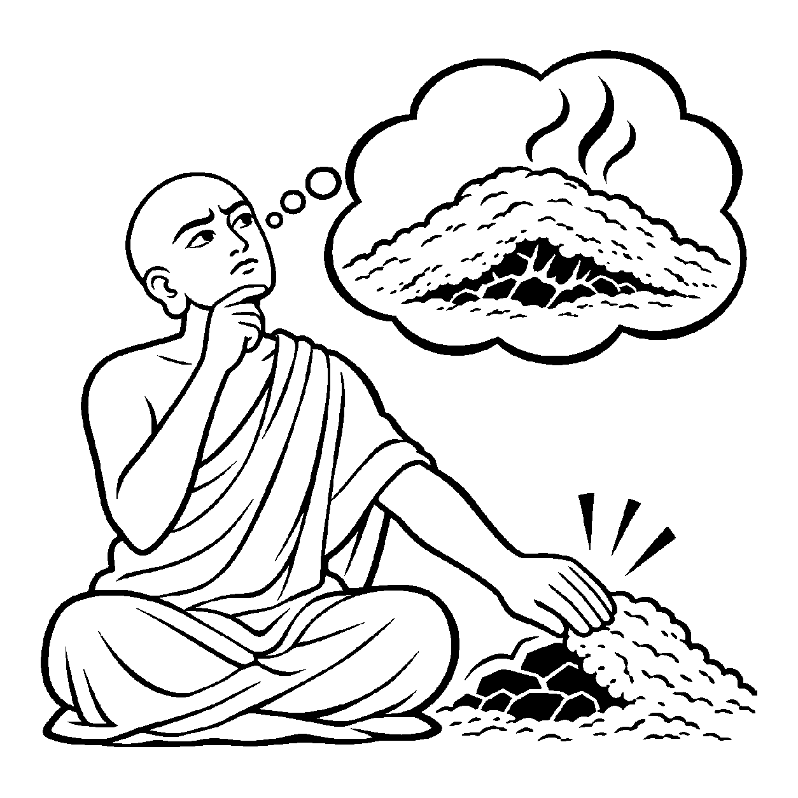

કાચ જેવું સ્વચ્છ સરોવર હોય, ઉપરથી જળ સાવ નિર્મળ અને સ્થિર દેખાતું હોય, પણ તળિયે ઝીણી ધૂળ દબાયેલી પડી હોય જે સહેજ પવન કે આંચકો આવતાં જ ઉપર આવી શકે છે. તેવી જ રીતે જ્યારે ઉપશમ કે ક્ષપક શ્રેણીમાં આરૂઢ થયેલા પરમ સંયમી મુનિરાજ બહારથી પૂર્ણ વીતરાગી જેવા શાંત દેખાતા હોય, છતાં તેમના ભીતરમાં હજી સૂક્ષ્મ સંજ્વલન લોભ કે મોહની અવ્યક્ત અશુદ્ધિ મોજૂદ છે તેવું સૂક્ષ્મ વિશ્લેષણ કરવામાં આવે, ત્યારે તે 'અવ્યક્ત અશુદ્ધ અંતિમ વ્યવહારનયનામક દ્રવ્યાર્થિકનય' કહેવાય છે.
આ નય સ્થૂળ પાપોની વાત કરતો નથી, પરંતુ સાધનાની સર્વોચ્ચ ભૂમિકા (આઠમાથી દસમા ગુણસ્થાનક) માં રહેલી અતિસૂક્ષ્મ અશુદ્ધિને પકડે છે. ઉપશમ શ્રેણીમાં મોહ દબાઈ ગયો છે (અવ્યક્ત છે), નષ્ટ થયો નથી. જ્યાં સુધી બારમું ગુણસ્થાનક ન આવે ત્યાં સુધી આત્મા સર્વથા શુદ્ધ નથી થયો, એવું સાચું ભાન આ નય કરાવે છે.
આ નય ઉચ્ચ સાધકને ચેતવે છે કે જરાય પ્રમાદી ન બનશો; જ્યાં સુધી કેવળજ્ઞાન ન પ્રગટે ત્યાં સુધી સૂક્ષ્મ કષાયોનું મૂળિયાં હજી જીવંત હોઈ શકે છે.
શાંત સરોવર તળિયે જે, ધૂળ છુપાઈ રહેલ;
અવ્યક્ત અશુદ્ધિ નય વદે, શ્રેણીગત જે સેલ.
સાધનાની ઊંચી ભૂમિકામાં પણ અંતરમાં છુપાયેલા સૂક્ષ્મ રાગ પ્રત્યે સજાગ રહી, નિરંતર આત્મજાગૃતિ જાળવવી.

વનવાસમાં ઘોર તપશ્ચર્યા કરતા મુનિરાજ વિમલકીર્તિ ઉપશમ શ્રેણી ચડીને શાંતિના શિખરે પહોંચ્યા હતા. તેમના મુખમંડળ પર અદ્ભુત તેજ હતું, શરીર સ્થિર હતું અને મનમાં કોઈ ક્રોધ કે કામવાસનાનો લેશમાત્ર અનુભવ થતો નહોતો. મુનિરાજના મનમાં એક સૂક્ષ્મ વિચાર જાગ્યો: "હવે મારે કોઈ દોષ બચ્યો નથી! હું તો સર્વથા શુદ્ધ અને કેવળજ્ઞાની જેવો જ મુક્ત થઈ ચૂક્યો છું!" પરંતુ અંતરના કોઈ અજ્ઞાત ખૂણેથી તેમને એક અતિસૂક્ષ્મ અજંપો થતો હતો: "જો હું પૂર્ણ શુદ્ધ છું, તો મને કેવળજ્ઞાન કેમ પ્રગટતું નથી? આ ભીતરી અવરોધ શું છે?" આ ગૂઢ પ્રશ્ન તેમના ચિત્તમાં મંથન જગાવવા લાગ્યો: "આ પરમ શાંતિ પાછળ કઈ અદૃશ્ય અશુદ્ધિ છુપાયેલી છે?"
તે જ સમયે ધ્યાનમાં તેમના જ્ઞાન-નેત્ર ખૂલ્યા અને તેમને અવ્યક્ત અશુદ્ધ અંતિમ વ્યવહારનયનો મર્મ પ્રતીત થયો: "અહો! મેં મોહને માત્ર દબાવ્યો છે (ઉપશમિત કર્યો છે), તેનું સમૂળગું નિકંદન કાઢ્યું નથી! જેમ રાખ નીચે અંગારો દબાયેલો હોય તેમ દસમા ગુણસ્થાનક સુધી સૂક્ષ્મ લોભ હજી અવ્યક્ત રૂપે જીવંત છે. જો હું સાવધાન નહીં રહું તો આ ઉપશમ શ્રેણી પરથી નીચે પતનની શક્યતા છે!" આ નય-દ્રષ્ટિનું પાન કરતાં જ મુનિરાજનો સૂક્ષ્મ અહંકાર ઓગળી ગયો. તેઓ અપ્રમાદી બનીને ક્ષપકશ્રેણીના પરમ પુરુષાર્થમાં લાગી ગયા અને મોહના મૂળિયાંને બાળીને સાચે જ કેવળજ્ઞાનના સ્વામી બન્યા.
જો આ નય કદાગ્રહ બને, તો મનુષ્ય ઉચ્ચ સાધકો અને મુનિઓને પણ સામાન્ય સંસારી જેવા પાપી ગણીને તેમની સાધનાનું મૂલ્ય ઘટાડી નાખે છે. આવી એકાંત જડતાથી જીવ વર્તમાન વ્યવહારિક સાધના અને કર્તવ્યોની ઉપેક્ષા કરી બેસે છે અને ક્રમિક પરિણામોને સુધાર્યા વિના અકાળે પૂર્ણતાના મિથ્યા સંતોષમાં રાચે છે.
આ જ નય જ્યારે સમન્વયશીલ બને છે, ત્યારે તે સાધકને આધ્યાત્મિક યાત્રાના આખરી મુકામ સુધી પરમ જાગૃત રાખીને પ્રમાદમુક્ત સાધનાનું અમૃત પૂરું પાડે છે.